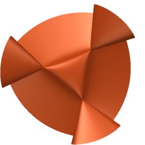
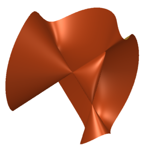
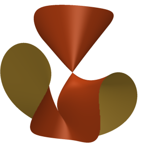
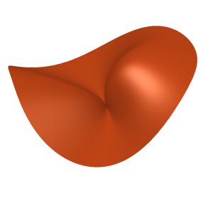

3.5. Isotrivial families
In this section, we continue the theme of constructing good families, but with a twist. Let $X \subset \P^3$ be a cubic surface with an automorphism group $G$. We then get a family of cubic surfaces $$\pi \colon [X/G] \to BG,$$ and hence a map from $BG$ to the moduli stack of cubic surfaces $$\mu \colon BG \to \mathscr{M}.$$ Suppose we know that the family $\pi$ is good. In this case, this simply means that $X$ is not in the closure of a general cubic surface $S$. Then, we get $$\mu^* [\Orb(S)] = 0,$$ which in turn gives a linear relation among the coefficients of the expression for $[\Orb(S)]$ pulled back to $A^4(BG)$. To get a useful relation, the group $A^4(BG)$ must be rich. In particular, we must take $G$ to be infinite; otherwise, $A^4(BG)$ is torsion, and we only get a congruence relation.
If we wish to obtain a family over a schematic base instead of $BG$, we can easily do so. We consider an arbitrary scheme $B$ with the free action of $G$ such that the quotient $B/G$ is a scheme, and take the family to be $$\pi \colon (X \times B)/G \to B/G,$$ where $G$ acts on $X \times B$ diagonally. In particular, for $G = \G_m$, the only group we use, we can take $B$ to be an arbitrary $\G_m$-torsor (line bundle minus the zero section) over a scheme. See Section 3.10 for an example.
To implement the strategy outlined above, we need to prove that the cubic surface $X$ does not lie in the closure of the orbit of a general cubic surface. Following Definition 2.4 [5026], say that $X$ is good if it has this property. Proposition 5.3 [2104] proves that the following cubic surfaces are good (the parenthesis describes the singularities):
- $x_0x_1x_3 = x_2^3 \quad (3A_2)$
- $x_3(x_0x_2-x_1^2) = x_0x_1^2 \quad (A_3 + 2A_1)$
- $x_3(x_0x_2-x_1^2) = x_0^2x_1 \quad (A_4 + A_1)$
- $x_3x_0^2 = x_1^3 + x_2^3 \quad (D_4)$
For the reader's amusement, we include real pictures of the surfaces above in Figure 6.




Let $X \subset \P^3$ be a good cubic surface. Let $G$ be the automorphism group of $X$ and $\G_m \to G$ a one-parameter subgroup. The family $$[X/\G_m] \to B\G_m$$ yields a relation $$a_{1^4}v_1^4 + a_{1^2\cdot 2} v_1^2v_2 + a_{1\cdot 3} v_1v_3 + a_{2^2}v_2^2 + a_4 v_4 = 0,$$ where the $v_i$ are the Chern classes of the push-forward of the anti-canonical bundle. Let us explain how to compute the push-forward of the anti-canonical bundle in this setting. For an integer $a$, let $\chi(a)$ denote the $1$-dimensional $\G_m$ representation where the $\G_m$ action is given by $$t \colon v \mapsto t^a v.$$ Suppose $X \subset \P^3$ is the zero-locus of a homogeneous cubic form $F \in k[x_0,x_1,x_2,x_3]$. Assume that the $\G_m$ acts on the variables $x_i$ by scaling, say $t \in \G_m$ acts by $$t \colon x_i \mapsto t^{w_i}x_i,$$ where $w_i \in \Z$. Since $V(F)$ is $\G_m$-fixed, there exists $w \in \Z$ such that $$F \left(t x_0, t x_1, t x_2, t x_3\right) = t^w F\left(x_0, x_1, x_2,x_3\right).$$ Write $V^{\vee}$ for the $k$-vector space $\langle x_0, x_1, x_2,x_3 \rangle$. As a $\G_m$-representation, we have $$V^{\vee} = \chi(w_1) \oplus \chi(w_2) \oplus \chi(w_3) \otimes \chi(w_4).$$ The cubic $F$ defines a $\G_m$-invariant section of $\Sym^3 V^{\vee} \otimes \chi(-w)$. Thus, we can view $X$ as the zero locus of the line bundle $\O(3) \otimes \pi^*\chi(-w)$ in the projective bundle $\pi \colon [\P V/\G_m] \to B\G_m$. By the adjunction formula, we get $$\omega_X^{-1} = \O_{\P V}(1) \otimes \det V \otimes \pi^*\chi(w) |_X,$$ and hence $$\begin{split} \pi_*\left( \omega_X^{-1} \right) &= V^{\vee} \otimes \det V \otimes \chi(w) \\ &\cong \left( \bigoplus \chi(w_i) \right) \otimes \chi\left(-\sum w_i\right) \otimes \chi(w). \end{split}$$
Comments
No comments yet.
Leave a comment
Comments are reviewed before appearing. Your comment will be emailed to the author for approval.